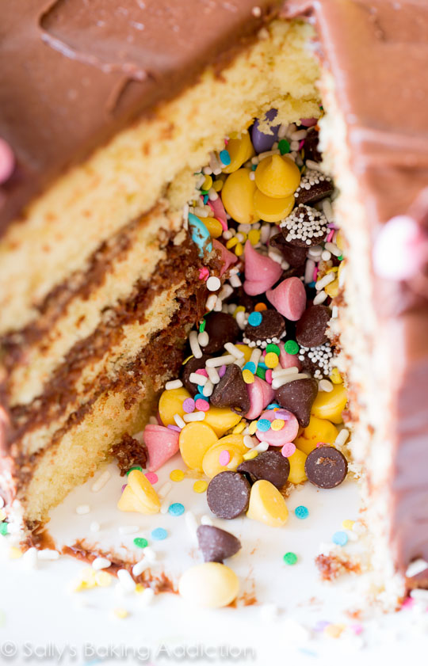

Ingradients and Steps
Alright, so. Let me teach you exactly how to make this piñata cake. I promise this is totally something you can handle. It’s just like baking a regular layer cake, but with a couple extra assembly steps. Start with my homemade cake batter. You want a flavorful cake with a tight crumb to hold its shape, but also one that is still tender and enjoyable to eat.
Today’s piñata cake is a cross between a vanilla cake, a butter cake, and a yellow cake. Its ingredients are standard: creamed butter and sugar, eggs, vanilla extract, flour, buttermilk. The KEY is in the eggs. Now, don’t get scared. This is a giant four layer cake– you will need 3 whole eggs plus 4 egg yolks. That is a lot, I know. But again, this cake is enormous. All those egg yolks (and the buttermilk) are what make this piñata cake so rich, so moist, and soooo tender. Oh my gosh, this has to be my favorite cake recipe.
Step-1:
Bake the four layers in 9-inch cake pans. Allow to cool completely. Frost one layer. This will be the bottom of the cake. More on this silky smooth fudge frosting in just a sec.
Step-2:
Then, cut a circle in the center of two of the cakes. You know what I used? A large, wide cup. You can also use a 3 -4 inch round cookie cutter or a cut circular piece of parchment paper to use for tracing with a sharp knife. Just make sure those two cakes have the same size hole. These two holed cakes will be the two middle layers of the piñata cake.
Place one holed cake layer on top of the bottom frosted layer. Frost the holed layer and inside the cavity.

Step-3:
Top with the 2nd holed layer (which is the third layer of the piñata cake) and frost that too. Then, grab some candies. I used springtime chocolate morsels that came in yellow and pink, M&Ms, Sno-Caps, and sprinkles. You can use absolutely anything you, your kids, your friends, and your lucky piñata cake eaters love: chopped candy bars, white chocolate chips, gummy bears, jelly beans, candy corns, etc.
Fill the hole with the candies.
That’s a weird sentence.
Step-4:
Then, top the cake with another whole cake layer. Frost the entire cake and decorate as you please. Get crazy! Get festive! And most importantly, get hungry.
So, that fudge frosting. Woo-eee. Chocolate to the max! Smooth as silk, luscious, creamy, stick-to-the-roof-of-your-mouth, “let me just eat the frosting with a spoon if ya don’t mind” fabulous.
Step-5:
Now, the best part… drum roll please.
Cut into the cake and listen to the ooo’s and ahh’s as your hungry party goers discover the candies hidden inside.
OMG this is the coolest cake in the world. No really, I said that.